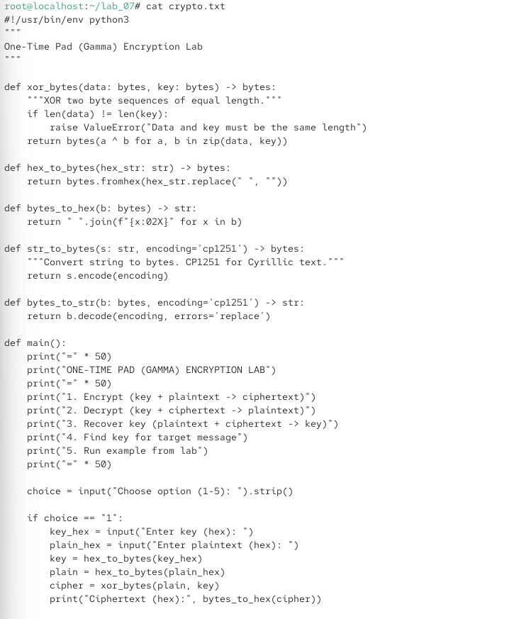
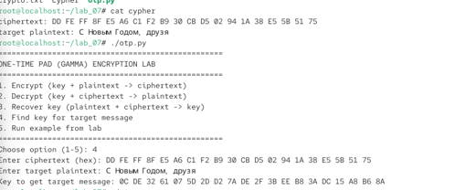
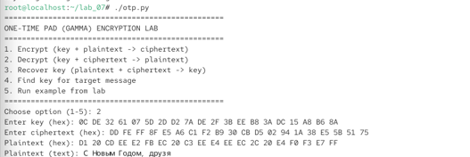

7.октябрь.2026
Применение режима однократного гаммирования (One-Time Pad)
Освоить на практике применение режима однократного гаммирования.
Действие: В домашней директории /lab_07 создать файл otp.py с реализацией режима однократного гаммирования.
cd ~/lab_07 cat > otp.py
Листинг программы otp.py:



Рис. 2,3,4 — python
Действие: Сделать файл исполняемым и запустить. Выполнение примера из лабораторной (пункт 5)

Рис. 5 - Отображается меню программы.
При правильном ключе получается исходный текст «Штирлиц – Вы Герой!!». При неправильном ключе получается другой осмысленный текст «Штирлиц – Вы Болван!». Это демонстрирует, что при однократном гаммировании даже неверный ключ даёт осмысленный текст, что затрудняет криптоанализ.
Действие: Выбрать пункт 4 — «Find key for target message».

Рис. 6 — Ключ вычислен по формуле Ki=Ci⊕Pi Ki , где Ci — шифротекст,Pi — целевой открытый текст.
Действие: Выбрать пункт 2 — «Decrypt».

Рис. 7 — С подобранным ключом шифротекст успешно расшифрован в целевое сообщение «С Новым Годом, друзья».
1. Поясните смысл однократного гаммирования. Это метод симметричного шифрования, при котором на открытый текст накладывается случайная последовательность бит (гамма) той же длины, что и текст. Наложение выполняется операцией XOR. Расшифрование выполняется той же операцией с тем же ключом.
2. Перечислите недостатки однократного гаммирования. Ключ должен быть истинно случайным. Ключ должен быть той же длины, что и сообщение. Ключ можно использовать только один раз. Сложность генерации и распространения ключей большой длины. При компрометации ключа вся переписка раскрывается.
3. Перечислите преимущества однократного гаммирования. Абсолютная стойкость (доказана К. Шенноном) при выполнении всех условий. Простота реализации (операция XOR). Высокая скорость шифрования и расшифрования. Криптоанализ невозможен при правильном использовании.
4. Почему длина открытого текста должна совпадать с длиной ключа? Потому что гамма накладывается побитово на каждый символ текста. Если ключ короче, его придётся повторять, что нарушает условие однократности и снижает стойкость.
5. Какая операция используется в режиме однократного
гаммирования, назовите её особенности? 
6.Как по открытому тексту и ключу получить
шифротекст? 
7.Как по открытому тексту и шифротексту получить
ключ?
8.В чём заключаются необходимые и достаточные условия абсолютной стойкости шифра? Полная случайность ключа. Равенство длин ключа и открытого текста. Однократное использование ключа.
5. Содержание отчёта
□ Титульный лист
□ Цель работы
□ Описание процесса выполнения с командами и снимками экрана
□ Листинг программы otp.py
□ Результаты работы программы
□ Ответы на контрольные вопросы
□ Выводы, согласованные с целью работы
В ходе лабораторной работы я:
Разработал приложение otp.py на языке Python, реализующее режим однократного гаммирования.
Реализовал функции:
Шифрование (ключ + открытый текст → шифротекст).
Расшифрование (ключ + шифротекст → открытый текст).
Восстановление ключа (открытый текст + шифротекст → ключ).
Подбор ключа для целевого сообщения.
Выполнил пример из лабораторной работы:
Зашифровал сообщение «Штирлиц – Вы Герой!!» ключом Центра.
Получил шифротекст DD FE FF 8F E5 A6 C1 F2 B9 30 CB D5 02 94 1A 38 E5 5B 51 75.
При расшифровании неправильным ключом получил осмысленный текст «Штирлиц – Вы Болван!», что демонстрирует стойкость шифра.
Подобрал ключ для сообщения «С Новым Годом, друзья!»:
Ключ: 0C DE 32 61 07 5D 2D D2 7A DE 2F 3B EE B8 3A DC 15 A8 B6 8A.
Убедился, что с этим ключом шифротекст расшифровывается в целевое сообщение.
Убедился, что однократное гаммирование обеспечивает абсолютную стойкость при выполнении всех условий (случайный ключ, равенство длин, однократное использование).
освоено практическое применение режима однократного гаммирования.
7. Краткая сводка команд
bash
# Переход в рабочую директорию
cd ~/lab_07
# Создание программы
cat > otp.py
# (вставить листинг программы)
# Сделать исполняемым и запустить
chmod +x otp.py
./otp.py
# Пример работы:
# Пункт 5 — пример из лабораторной
# Пункт 4 — подбор ключа для целевого сообщения
# Пункт 2 — проверка расшифрования
# Просмотр файла cipher
cat cipher